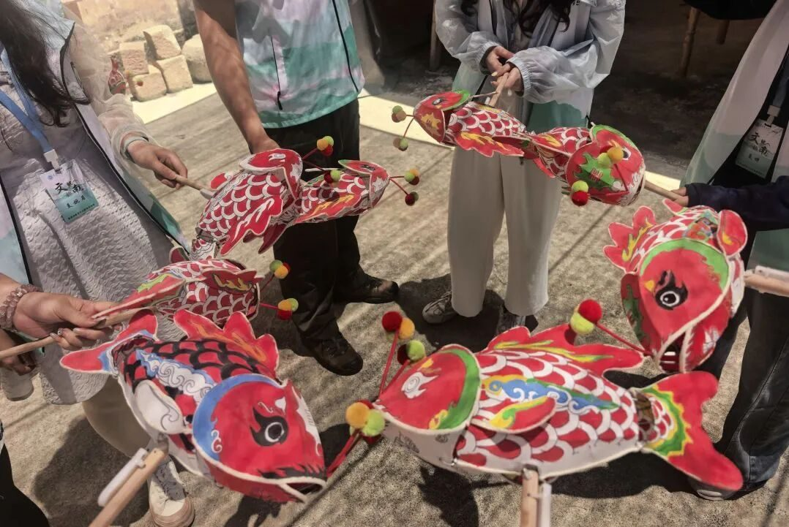
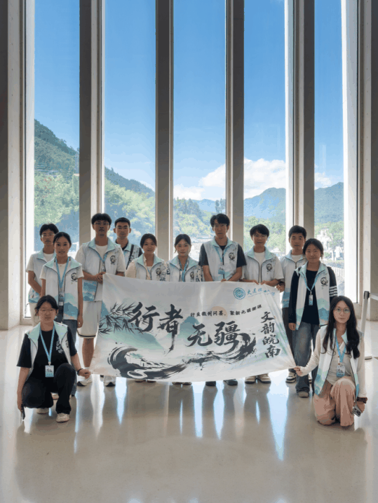
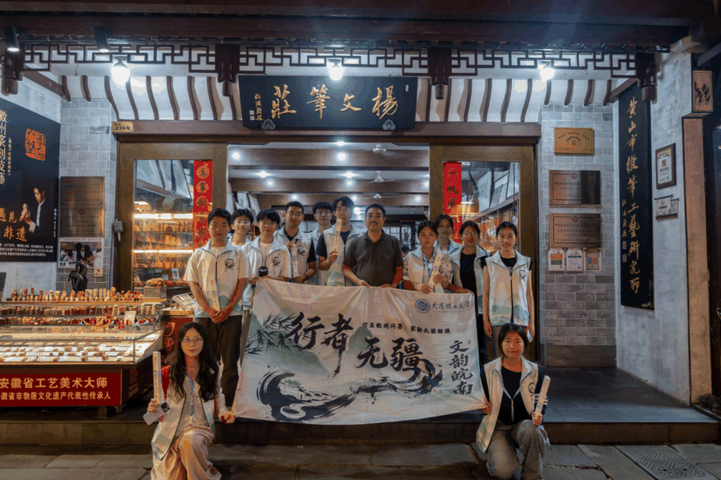
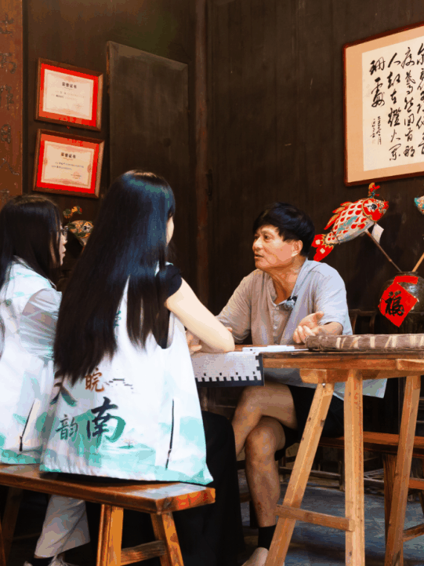
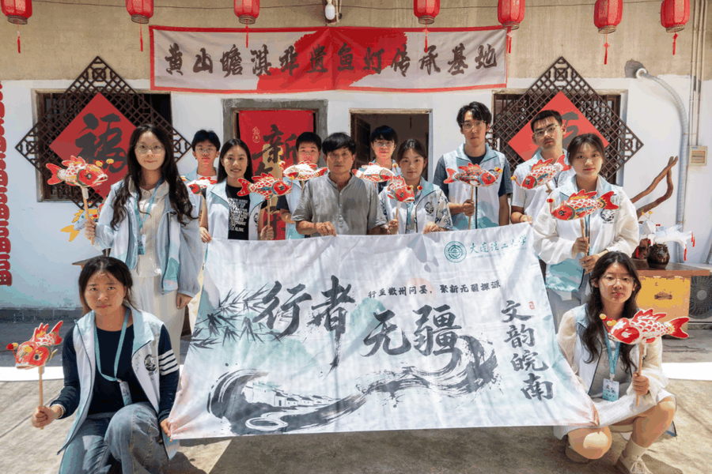

【行者无疆·文韵皖南】赴徽州，寻笔墨灯影里旧年山河

DAY4

行者无疆
题旨
第四日·载文
拾忆
千载文心，一纸清辉
匠语
一帘竹影，一管清风
地点
宣纸文化园→杨文笔庄
寻访印记
一纸承千载，一管写春秋
( 一句话推荐 )
纸是月光铺成的路，笔是走在路上的诗人


DAY5
行者无疆
第五日·归灯
题旨
千年归途
拾忆
一缕乡愁，一捧烛火
匠语
瞻淇古村
地点
一灯如豆，万家可归
寻访印记
( 一句话推荐 )
鱼灯亮起的刹那，古村醒了，乡愁有了形状

步履丈量徽韵，青春赋能非遗
五日寻访中，实践团围绕徽州糕饼、石雕、徽墨、宣纸徽笔和鱼灯五个主题开展实地考察，梳理传统技艺的发展脉络、传承方式与现实处境；通过与多位非遗传承人和一线工匠面对面交流，收集一手实践资料，深化了对非遗保护、青年参与和文化传播路径的理解，也为后续成果整理与宣传转化奠定了基础。
这既是一次文化寻访，也是一场青年与传统之间的深度对话。从展馆里的历史叙事到工坊中的技艺实践，从传承人的坚守到古村落里的民俗记忆，队员们在行走中读懂了非遗的价值：保护非遗并非简单复刻过去，而是在尊重传统、守护技艺的基础上，让文化与当代生活重新相遇。
实践有期，传承不止。未来，“行者无疆”实践团将继续整理调研资料、记录非遗故事、传播实践成果，以青年视角讲好中华优秀传统文化故事，让沉淀千年的文化瑰宝在新时代焕发新的光彩。
来源 | 行者无疆实践团
图片 | 行者无疆实践团
文字 | 童思嘉
编辑 | 袁 婵 原羽佳
审核 | 闫 磊
责编 | 邹靓靓 周 亮